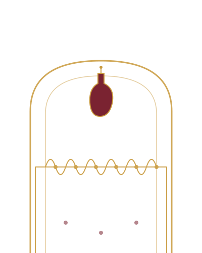

Jamón serrano, tapas de siempre y buena barra, dentro de un edificio histórico de la Av. 5 de Mayo. Pata Negra Histórico es cantina, es tapería y es punto de encuentro del Centro desde hace años.

"Un clásico cuando se quiere disfrutar de buen ambiente."
Así describen al lugar sus visitantes habituales.
Pata Negra nació como un bar de inspiración española en la Condesa, y con los años se convirtió en punto de referencia de la Ciudad de México. Hoy, su sede en Av. 5 de Mayo 49 ocupa un edificio del Centro Histórico, a un costado del Zócalo, y mantiene la misma receta original: barra generosa, buena cerveza, coctelería con oficio y un menú de tapas que rinde homenaje a España sin perder el sabor de la Ciudad de México.
Aquí conviven el turista que busca su primer jamón serrano, el vecino que llega después del trabajo por una michelada, y el grupo de amigos que se queda hasta la música en vivo del segundo piso.
El ambiente de Pata Negra Histórico no se queda quieto: cada noche tiene su propio ritmo.
Noches temáticas con lucha libre, tacos y mezcal para los que buscan algo distinto al bar de siempre.
El segundo piso se llena de música en vivo y salsa, con clases improvisadas incluidas.
Sesiones de DJ que acompañan la barra hasta la madrugada, entre cocteles de autor y buena compañía.
Con miles de reseñas en Google, TripAdvisor y Yelp, Pata Negra Histórico es de los sitios más comentados del Centro Histórico.
Un hallazgo cerca del Zócalo: buena comida, ambiente agradable y un servicio que se nota cuidado.
Un bar real en pleno Centro, con barra generosa y bebidas a la altura de cualquier coctelería de la ciudad.
Buen ambiente, buenos tragos y un servicio puntual; de lo más recomendable en la zona.
Ven por el jamón, quédate por el ambiente. Reserva tu mesa hoy mismo.